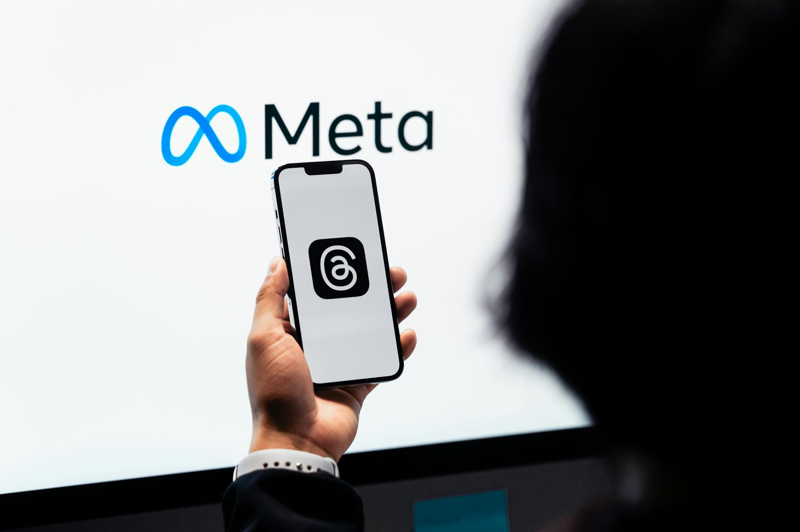

■ 说透 / SHUOTOU · 知览
SUBTITLE
Meta 花 143 亿入股 Scale AI 并挖走创始人 Alexandr Wang，第三天 Muse Spark 上线，但开源版本悄悄消失了，这笔交易正在重写 Meta 在 AI 军备竞赛里的战略底牌。

4月8日，Meta AI app的单日访问量暴涨了450%，直接冲进App Store前五。原因是一个叫Muse Spark的新功能上线了——你拿手机摄像头对着任何东西，它能实时告诉你这是什么、怎么回事、值多少钱，联合了1000多个医生做健康建议，拍张菜就能出营养分析，挺唬人的。
但同一天，另一件事安静地发生了。Muse Spark原本计划的开源版本，没了。发布公告里不提，技术博客里不提，就是悄悄地从路线图上消失了。
450%的暴涨，和一个悄悄消失的承诺
这事你要是不结合另一条新闻看，可能就当Meta又搞了个产品发布，没什么特别的。但往前倒五天，4月3日，Meta刚刚宣布花143亿美元入股Scale AI，拿下49%股份，同时把创始人亚历山大·王（Alexandr Wang）直接挖进了Meta Superintelligence Labs的核心位置，不是挂个虚职那种，是真的坐进了决策桌。
$143亿 — Meta 入股 Scale AI 49% 的交易金额
450% — Meta AI app 单日访问量暴增幅度
1000+ — Muse Spark 合作医生数量
那Scale AI到底是干嘛的？说白了，它是全球最大的AI数据标注公司，客户名单里有OpenAI、Google、美国国防部，基本上你叫得出名字的AI大厂都找它干过活。亚历山大·王今年29岁，MIT辍学，19岁就把这家公司拉起来了，现在个人身家超过20亿美元。我第一次看到这个履历的时候就觉得挺离谱的，29岁，身家20亿，被一家万亿市值的公司花143亿请进去——你想啊，上一次有独角兽AI公司的创始人主动加入科技巨头，我是真想不起来有过。
那这意味着什么呢？一家给所有AI公司打工的数据公司，被其中一家拿下了近一半股份，连创始人都挖走了。OpenAI以后还能放心把训练数据交给一个Meta持股近半的公司来标注吗？Google呢？嗯。。这个问题大家都在想，但没人公开说。
一家给所有人打工的公司，被其中一个老板锁定了
那问题来了，Meta一直是开源AI的头号旗手啊。Llama系列从2023年开始就是开源的，Llama 2、Llama 3、Llama 4，每一代都是开源社区的大事件，Meta靠着开源Llama在AI圈子里攒了一大堆好感和开发者生态。扎克伯格本人也没少在公开场合讲开源的好处，什么"开源让所有人受益"，什么"我们相信开放的力量"，这些话说了不是一两次了。
那为啥Muse Spark这次就不开源了呢？
这就得说回Scale AI真正值钱的东西了。你注意，我说的不是数据本身——Meta自己手里有Instagram、Facebook、WhatsApp，社交数据多得是，三十多亿用户每天产生的内容量，地球上没几家公司比得过它，它不缺原始数据。Scale AI真正值钱的，是它知道怎么设计训练数据。
这话听着有点绕，我拆开说。你训练一个大模型，光喂数据是不够的，你得告诉模型"什么是好的回答"，这一步叫RLHF（基于人类反馈的强化学习），说白了就是让人类标注员去评判模型的输出，哪个好哪个差，然后模型根据这些反馈来调整自己。但问题是，怎么设计这个评判标准，怎么配置标注流程，怎么构建评估框架，怎么在几千个标注员之间保持判断的一致性——这些东西才是Scale AI积累了七八年的核心能力，也是亚历山大·王脑子里最值钱的部分。
就好比你开一家餐厅，食材市场上谁都能买到，但你家大厨脑子里那套配方、那个火候的感觉、哪道菜先炒哪道菜后焖的节奏，这些东西不在菜单上，也写不进操作手册里。Scale AI卖的就是这个——不是食材，是配方。
买的不是食材，是大厨脑子里的配方
那你就懂了，为啥Muse Spark不能开源。
开源一个模型的权重，等于是把成品菜端上桌让大家尝。Llama系列一直这么干，你尝了可以自己回家琢磨，但你不知道原料配比和火候，做出来的味道总是差点意思，Meta不怕。但Muse Spark不一样，它是Meta拿到Scale AI的配方之后做出来的第一道菜，如果你把这道菜的制作过程公开——包括训练数据的配置方式、RLHF的评估框架、标注流程的设计思路——那等于是把刚花143亿买来的配方，免费送给了OpenAI、Google和所有竞争对手。
说白了，闭源保护的不是模型本身，是模型背后那套训练方法论。
好，到这儿你可能觉得事情已经挺清楚了——Meta转向闭源了，开源只是以前的权宜之计。但有个反向证据不能假装看不见。
Llama系列还在开源。4月8日Muse Spark上线的同一天，Meta确认Llama 4的开源计划不变，社区版本照常发布。而且Meta内部有人对媒体说，Llama的开源路线没有任何调整计划。也就是说，Meta做了一个选择性的闭源——Llama继续开源，旗舰产品Muse Spark闭源。
Llama和Muse Spark，同一个逻辑的两面
那这个「选择」意味着什么呢？
你想啊，Llama开源，Meta损失的是什么？是模型权重。但Llama的训练数据配方，在Scale AI加入之前就已经定型了，那套方法论不在Llama里面。而Muse Spark是Scale AI方法论灌进去之后的产物，开源Muse Spark等于暴露Scale AI的配方，开源Llama不会。所以这两个选择不矛盾，恰恰是同一个逻辑的两面——哪个产品里装了143亿买来的秘密，哪个就不能开源。
还有一件事我觉得值得单独说。亚历山大·王加入Meta的方式很特别，他不是那种被动留任的创始人——很多大额投资里创始人待个一两年就走了，本质上就是拿钱走人附带一个竞业限制。但王是以创始人身份直接进入核心决策层的，在科技巨头挖角独角兽AI公司创始人的历史里，我翻了一圈，几乎没有先例。一个29岁的人，在Meta这种体量的公司里拿到真正的话语权，这说明扎克伯格买的不只是Scale AI这家公司的资产和客户名单，他买的是王这个人脑子里的东西——怎么让模型变得更好的那套方法。
如果王只是来站个台、挂个名，那Scale AI的方法论可能会慢慢在大公司的层级里稀释掉，这种事在硅谷的收购史上太常见了。但他进了核心决策层，那就意味着这套方法论会直接影响Meta接下来每一个旗舰AI产品的训练方式。Muse Spark只是第一个，后面还会有更多。
那Meta的竞争对手们在想什么？OpenAI和Google以前把最敏感的训练数据交给Scale AI来标注，现在Scale AI变成了Meta的一部分。这不光是"以后找谁标注"的问题，更让人不踏实的是——Scale AI在给你标注数据的那些年里，它对你的训练方法论了解多少？这些知识现在都在Meta能触达的范围内了**。说白了，你请了个装修师傅来家里干了三年活，他对你家的户型布局、管线走向、承重墙在哪儿，比你自己都清楚，现在这个师傅被你邻居高薪挖走了，你说慌不慌。
嗯。。这事儿比表面上看到的要复杂不少。
Meta花143亿入股加挖人，买的不是一家公司的控制权，是一个"怎么让模型变得更好"的秘密。闭源不是Meta变了，是这笔交易带来的东西决定了它不能开源。
> 配方的价值从来不在纸上写了什么，在于只有你知道。
— 01 —
ZAYEN知览
说透 · SHUOTOU · 知览